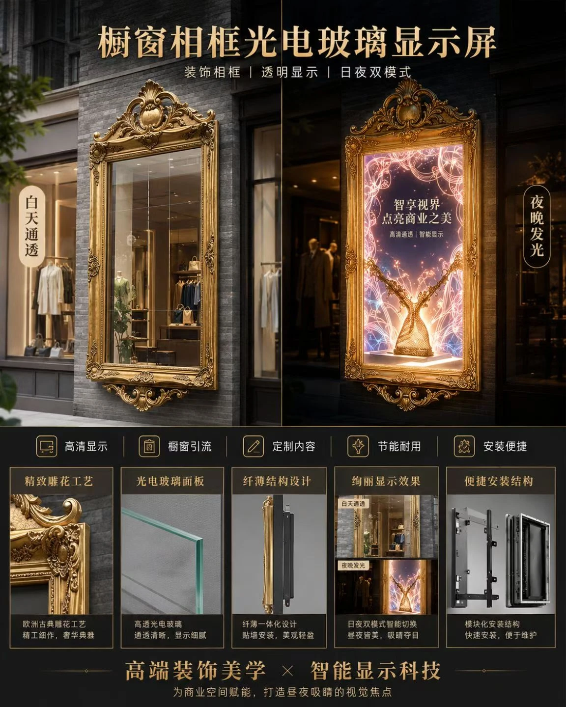

商业广场
公共艺术节点
兼顾远景识别、近景拍照、遮荫休息和夜间灯光反馈。
ART INSTALLATIONS
承担入口识别、拍照停留、互动反馈和节庆换装，优先解决尺度、基础、步行净空与维护。
兼顾远景识别、近景拍照、遮荫休息和夜间灯光反馈。

把车行视线、门厅尺度、品牌色温和节庆换装放进同一方案。

先确定拍照面、排队区、座椅和基础，再设计互动灯光反馈。
STAGE INSTALLATIONS
围绕观演视线、演员动线、结构吊挂、节目控制和应急切换组织演艺空间。

结合观演方向、水位、岸电、锚泊和维护通道组织湖面主秀。

把地面灯光、空中表演、音乐时间码和安全边界统一编排。

围绕运输分段、快速安装、节目切换和活动结束后的复用规划。
PALACE BANQUET SHOW
围绕地方文化、餐序剧情、环形舞台、宴席视线和运营导入，形成从内容策划到开席运营的完整体验。

浏览乐舞长安、飞天入席、长安天街、琵琶引、城阙万象与上元灯会等案例灵感，以及从策划到开席的服务方法。
进入宫宴餐秀 →URBAN RENEWAL
从街区入口、慢行导视、公共艺术和建筑界面入手，优先改善夜间安全、识别与停留。

入口门架建立第一印象，连续节点控制行走节奏，水面和建筑轮廓提供环境层次。正式落地需复核文保、消防、供电、排水和基础条件。

用可维护的连续节点连接入口、店铺界面、活动区和夜间停留点。

结合观看距离、环境亮度、内容频率、结构固定和设备维护确定配置。

以一处可识别节点组织座椅、活动、慢行照明和节庆内容切换。